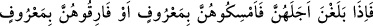
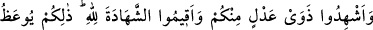
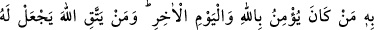
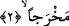

olmasından dolayıdır.
Bu âyet-i kerîmede üç boşamanın bir kerede verilmesinin çirkin olduğuna işâret
vardır, çünkü üç boşamadan sonra kadına geri dönmesi, mümkün değildir. Üç boşama
şeytana yardımcı olmak anlamına gelir, bunun terkedilmesi ise şeytana rağmen yapılmış
güzel bir iştir. Çünkü boşama şeytanın en önemli amaçlarından ve maksadlarındandır.
Nitekim Müslim Câbir (r.a.)’dan şu hadis-i şerifi nakletmektedir.
Câbir (r.a.) diyor ki: Peygamberimiz (s.a.)’den dinledim, buyurdu ki: “İblis’in arşı
denizin üzerindedir. İblis avanelerini/askerlerini gönderir de bunlar insanları fitneye
düşürürler. İblis yanında bunların en büyüğü insanları en çok fitneye düşürendir.
Göndermiş olduğu avanelerinden biri gelir:
“– Ben şöyle şöyle yaptım” der. İblis ona:
“– Sen bir şey yapmamışsın” der. Sonra bir diğeri gelir:
“– Ben onu karısıyla birbirinden ayırmadan bırakmadım” der. İblis onu kendisine
yakın kimseler içerisine alır ve: “– Sen ne iyisin, sen ne güzel bir saptırıcı ya da ne
güzel bir şerlisin.”[186] der.
Hadis metnindeki (nun-ayın-mim)’harflerinden oluşan kelime övgü anlamı ifâde eden
‘ni’me’ fiili olabileceği gibi, tasdik ve olumlu cevap harfi olan ‘neam’ de olabilir.
Övme anlamına olursa “sen ikrâma lâyık ne güzel bir nefersin” demek olur.
2. İddet müddetlerini doldurduklarında onları ya meşru ölçüler içerisinde
(nikâhınız altında) tutun veya onlardan meşru ölçülere göre ayrılın. İçinizden
adâlet sâhibi iki kişiyi de şâhid tutun. Şâhidliği Allah için yapın. İşte bu, Allah’a ve
âhiret gününe inananlara verilen öğüttür. Kim Allah’tan korkarsa, Allah ona bir
çıkış yolu ihsan eder.
“İddet müddetlerini doldurduklarında” yâni bekleme sürelerinin sonuna
yaklaştıklarında... demektir. İddet/bekleme süresi ise “üç ay hâli” süresidir. Kadın
üçüncü ay hâlinden temizlenip de boy abdesti almasa bile üç âdet kanamasının geçmesi
ile bekleme süresi dolar. Çünkü boşanan kadın iddetinin sonuna erdikten sonra ona rücu
etmek mümkün değildir. Böylece iddet müddetine ulaşmak demek olan “bulûğ” o süreye
yaklaşmak demektir.
Nitekim Müfredat’ta ifâde olunduğuna göre “el-bulûğ” ve “el-belâğ” herhangi bir
gayenin ve amacın en uç noktasına ulaşmak demektir ki, bu son nokta ister bir mekân